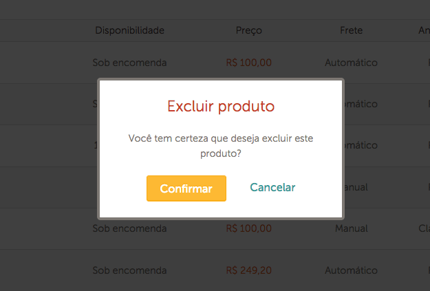

Um pouco sobre acessibilidade, CSS e Javascript
Publicado em:
@luiz
Quando se fala em acessibilidade na Web, normalmente as questões giram em torno de recursos mais avançados de navegação, como pop-ups, formulários com AJAX e menus, que exigem código CSS e Javascript para serem implementados. Isso porque, do lado do HTML, as coisas são um pouco mais simples. Ao escrever um HTML semântico, já ganhamos uma página bastante acessível.
Podemos notar isso com formulários, por exemplo. Ao usar os controles de formulário nativos e a validação HTML5, junto com as tags <label>, <fieldset> e <legend>, nossos formulários já são bastante acessíveis.
<form>
<fieldset>
<legend>Dados pessoais</legend>
<label>
Nome
<input type="text" required>
</label>
<label>
E-mail
<input type="email" required>
</label>
</fieldset>
<fieldset>
<legend>Endereço</legend>
<label>
Logradouro
<input type="text">
</label>
<label>
CEP
<input type="text" required pattern="[0-9]{5}-[0-9]{3}">
</label>
</fieldset>
<button type="submit">Enviar</button>
</form>
No exemplo de formulário acima, o uso das tags <fieldset> e <legend> ajuda o usuário a ter mais contexto na hora de preencher cada campo, tanto visual quanto auditivamente (com um leitor de tela). Deixar o contexto claro, por sua vez, ajuda usuários com déficit de atenção ou problemas de memória, ou ainda você mesmo, quando está distraído fazendo várias coisas ao mesmo tempo ou é interrompido por alguém ao seu lado.
Escrever um HTML semântico e usar componentes nativos do navegador evita muitos problemas de acessibilidade pois os navegadores são feitos para serem acessíveis; os desenvolvedores de navegador já têm que se preocupar em fazer componentes acessíveis; o mesmo acontece com os desenvolvedores de sistemas operacionais. Por isso, quando conseguimos usar o que já vem implementado no navegador, evitamos bastante dor de cabeça!
Porém, nem sempre o que precisamos já está implementado nativamente. Para colocarmos menus drop-down em nossas páginas, por exemplo, precisamos recorrer a CSS e Javascript.

Outro exemplo são caixas de diálogo; neste caso, existe o componente nativo, mas a aparência não é muito customizável, o que leva à necessidade de reimplementá-lo com HTML, CSS e Javascript.

Nesses casos, como o próprio desenvolvedor front-end está implementando o componente, cabe a ele garantir que este seja acessível. Isso pode ser bem complicado em alguns casos; por outro lado, com o controle total do componente em mãos, o desenvolvedor pode implementar soluções extremamente acessíveis.
Quando o CSS atrapalha
CSS é bastante poderoso, e permite, em conjunto com o HTML, até mesmo a criação de jogos inteiros. Com esse poder, conseguimos construir componentes visuais que antes só eram possíveis com a ajuda de Javascript, como menus drop-down e caixas de diálogo customizadas.
Porém, componentes criados apenas com HTML e CSS não são automaticamente acessíveis. Quando implementamos uma solução mais complexa usando essas tecnologias, precisamos tomar o cuidado de passar mais informações para o navegador para que ele informe ao usuário o que está acontecendo na página. É aí que entra a especificação WAI-ARIA.
Um exemplo simples de truque poderoso de CSS é o checkbox hack, que podemos usar para esconder/mostrar dinamicamente elementos na tela. No Elo7, usamos essa técnica para fazer o menu drop-down do vendedor, mostrado anteriormente. No HTML, usamos um checkbox associado a um label e um elemento que queremos esconder/mostrar (no exemplo abaixo, a lista com a classe opcoes):
<input type='checkbox' id='mais-opcoes' class='checkbox-hack'>
<label for='mais-opcoes' class='label-menu'>Mais opções</label>
<ul class='menu'>
<li>Copiar</li>
<li>Compartilhar</li>
...
</ul>
No CSS, escondemos o checkbox e fazemos com que o elemento desejado só fique visível quando o checkbox estiver marcado, usando, para isso, a pseudoclasse :checked:
.checkbox-hack, .menu {
display: none;
}
.checkbox-hack:checked + .label-menu + .menu {
display: block;
}
Ao clicar no label, a lista aparece ou desaparece, conforme o estado do checkbox. Clique aqui para ver esse código funcionando no seu navegador.
Com um pouco mais de estilização, temos um menu funcional para a maioria dos usuários. Porém, para aqueles que dependem do teclado ou de um leitor de tela para navegar, essa lista de opções é muito difícil de ser acessada! Primeiro, não conseguimos acessá-la apenas com o teclado, pois o elemento <label> não recebe o foco conforme navegamos com a tecla Tab. Segundo, para um programa leitor de tela, o elemento <label> nada mais é do que um rótulo para um campo de formulário, nada mais. Portanto, ele não consegue falar para o usuário que há um menu escondido ali, que o usuário pode clicar nele para mostrar um novo conteúdo na tela.
Então, assim como a estilização é importante para olharmos e entendermos que esse label representa um menu, a marcação semântica é importante para os leitores de tela. Também é importante não escondermos o checkbox totalmente, para podermos interagir com ele por teclado. Tendo isso em mente, podemos melhorar nossa marcação com da seguinte forma:
<input type='checkbox' id='mais-opcoes' class='checkbox-hack' aria-haspopup='true' role='button'>
<label for='mais-opcoes' class='label-menu' aria-hidden='true'>Mais opções</label>
<ul class='menu'>
<li>Copiar</li>
<li>Compartilhar</li>
...
</ul>
Repare que colocamos os atributos do WAI-ARIA no checkbox e ainda colocamos aria-hidden=true no label. Como queremos que o checkbox possa ser ativado pelo teclado, é nele que devem ficar as marcações de semântica adicionais; a declaração aria-hidden=true no label garante que o texto "Mais opções" não é lido duas vezes, já que o leitor de tela automaticamente lê o rótulo de um campo de formulário (o checkbox, no caso) quando o usuário seleciona ele. Para conseguir ativar o checkbox por teclado sem que isso atrapalhe o layout, podemos escondê-lo de outras formas, como a abaixo:
.checkbox-hack {
position: absolute;
left: -9999px;
}
Confira aqui essa versão com uma estilização visual mínima. Se você acessar essa página de demonstração com um leitor de tela, poderá verificar que o checkbox passa a ser lido como um botão de pop-up, indicando para o usuário que ele pode clicar nesse componente da tela para acessar um menu com mais opções, justamente o que queremos que ele faça com esse componente.
Quando o Javascript ajuda
A solução acima já melhora bastante a acessibilidade de um checkbox hack, porém ainda falha num quesito de acessibilidade. Nada indica para o usuário que o menu está aberto ou fechado; ele precisa navegar para descobrir o estado da página, o que não é muito agradável. Para corrigir esse problema, podemos recorrer novamente aos atributos do WAI-ARIA, mais especificamente ao atributo aria-expanded.
O atributo aria-expanded serve justamente para indicar o estado de um elemento colapsável na tela, como um menu drop-down ou um item de um acordeon. Pode assumir os valores true, indicando que o elemento está expandido, ou false, indicando que está colapsado. Sendo assim, o atributo precisa mudar de valor dinamicamente de acordo com a interação do usuário, algo que só conseguimos com Javascript.
No nosso exemplo do checkbox hack, podemos adicionar o atributo aria-expanded com o valor false no checkbox, já que o menu está fechado no carregamento da página. Depois disso, podemos adicionar via Javascript um listener que altera o valor do atributo aria-expanded de acordo com o estado do checkbox:
document.getElementById('mais-opcoes').addEventListener('change', function(e) {
this.setAttribute('aria-expanded', this.checked);
});
Melhor ainda: podemos generalizar o código acima, fazendo com que ele já cuide de todos os checkboxes com a classe checkbox-hack:
var hacks = document.querySelectorAll('.checkbox-hack');
for (var i = 0; i < hacks.length; i++) {
hacks[i].addEventListener('change', function(e) {
this.setAttribute('aria-expanded', this.checked);
});
}
Veja o resultado final. Note que o código acima pode, junto com o código CSS anterior, ser reaproveitado entre páginas e até projetos, garantindo uma implementação mais acessível de um truque bastante útil de código.
Conclusão
Apesar de parecer relativamente inofensivo, CSS pode causar alguns problemas sérios de acessibilidade, como vimos neste post com o checkbox hack e também problemas de contraste, movimento excessivo na tela, dentre outros. Em alguns desses casos, um HTML mais semântico e um pouco de Javascript podem fazer toda a diferença para o usuário. Em todo o caso, quanto mais sofisticada nossa interface, maior nossa responsabilidade de mantê-la acessível.
Num próximo post, veremos, de certa forma, o caso contrário: como o CSS pode ajudar a deixar sua página mais acessível e como o Javascript pode acabar atrapalhando bastante seu usuário. Se tiver mais exemplos de casos como esses, compartilhe conosco nos comentários!